This page is a brief introduction of Question Setting App which can provide a guidance for you to use this app correctly.
(Important!: The programmer has tried his best to debug this app and provide serval error handing to prevent app crash or different functions overlay with each other. However, it still not a perfect app. You can use this app in the way you liked, but the programmer suggests you close the function you are using before you start the other one!)
When you load the question setting app, an interactive map would be loaded and zoom to your current location.
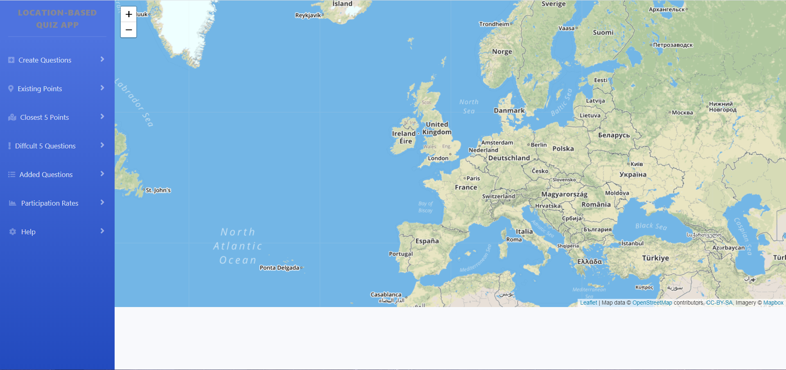
You can click "Start Creation" in "Creation Questions function to decide the latitude and longitude you want to locate your question. After you decide the location, you can click the button "Create Question Here" to load the question form.
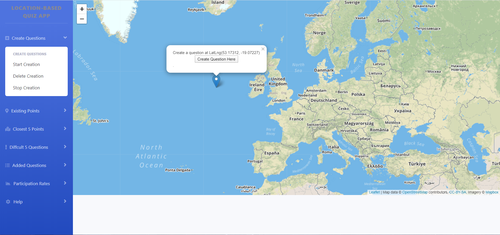
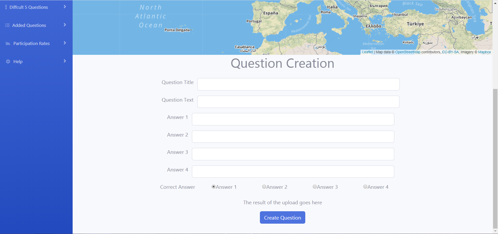
Please fill all part of the form before submit the creation, otherwise, the question would not been created and error messages would appear, like the image below.
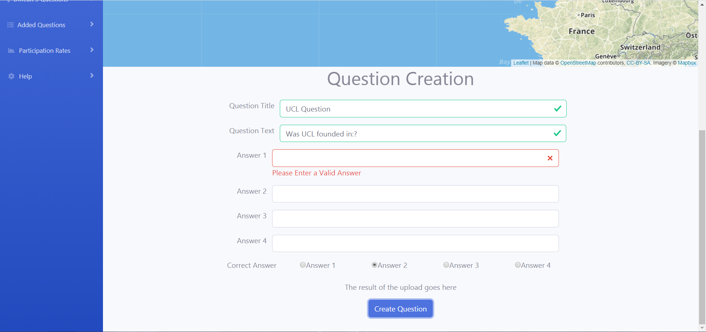
After you have finished the form correctly, you can click the button "Create Question" to upload the question to database. The input box would let you know if you finished all the form correctly and a message would appear to tell you the upload begins. The results of upload are shown above the button.
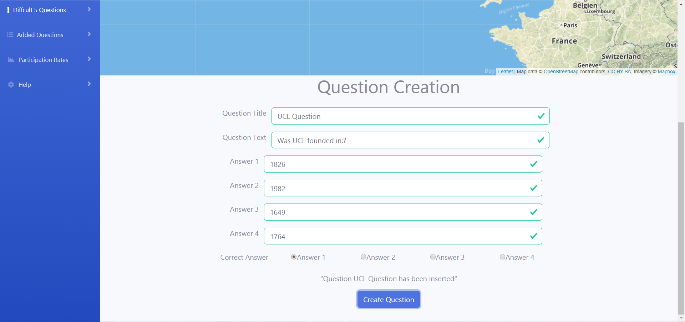
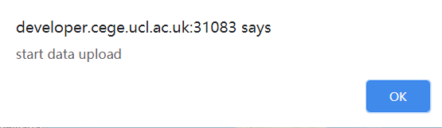
You can click "Delete Creation in "Creation Questions" function to delete the question or answer in the database if you know the ID. Same as function above, an error messages would appear if you enter invalid ID and The input box would let you know if you enter the ID correctly. The results of delete are shown below the input box.
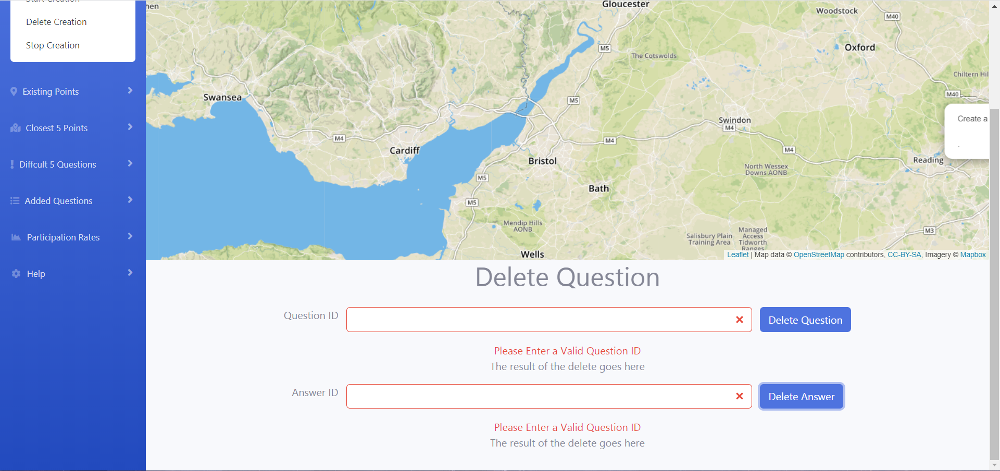
You can click "Stop Creation in "Creation Questions" function to remove the question form or delete form.
You can click "Load Points" in "Existing Points function to load the existing question points created by current user and default points. You can also click the point to see the question.
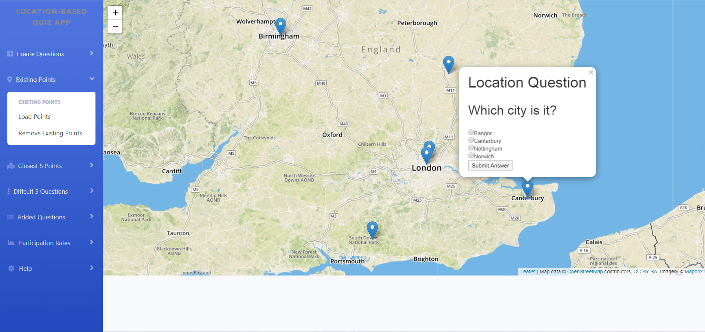
You can click "Remove Existing Points" in "Existing Points function to remove the existing question points.
You can click "Load Points" in "Closest 5 Points function to load the closest five points to your current location created by all users. Closest points shown in the black, your location shown in the pink. You can also click the point to see the question.
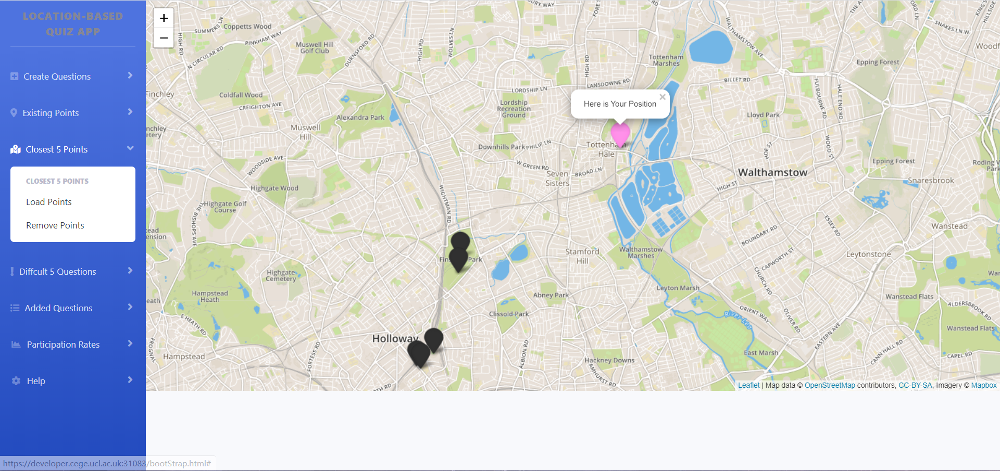
You can click "Remove Points" in "Closest 5 Points function to remove the closest five points.
You can click "Load Question" in "Difficult 5 Questions function to load the most difficult five questions created by any user where most wrong answers were given. If the number of questions is less than five, it means there are less than five questions that users have answered wrong in all.
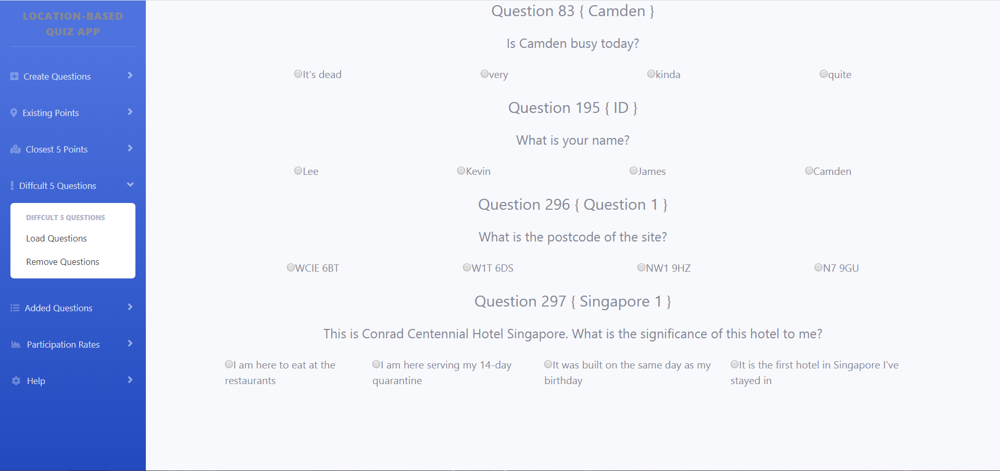
You can click "Remove Questions" in "Difficult 5 Questions function to remove the questions and reload the interactive map.
You can click "Load Question" in "Added Questions function to load the points added in the last week by any user. You can also click the point to see the question.
You can click "Remove Questions" in "Added Questions function to remove the questions.
You can click "All User Rate" in "Participation Rates function to load the graph which shown the participation rates for all user in last week.
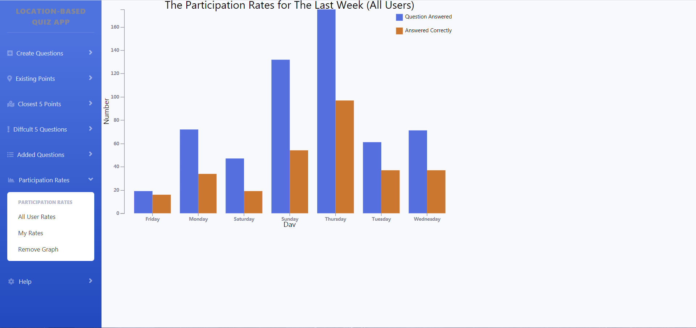
You can click "My Rate" in "Participation Rates function to load the graph which shown the participation rates for current user in last week.
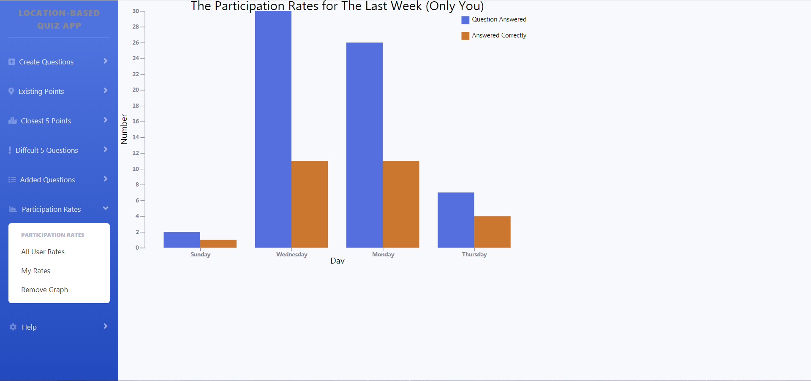
You can click "Remove Graph" in "Participation Rates function to remove the graph
(Note: If app crash when you are using, you can try to refresh the page to fix it!)